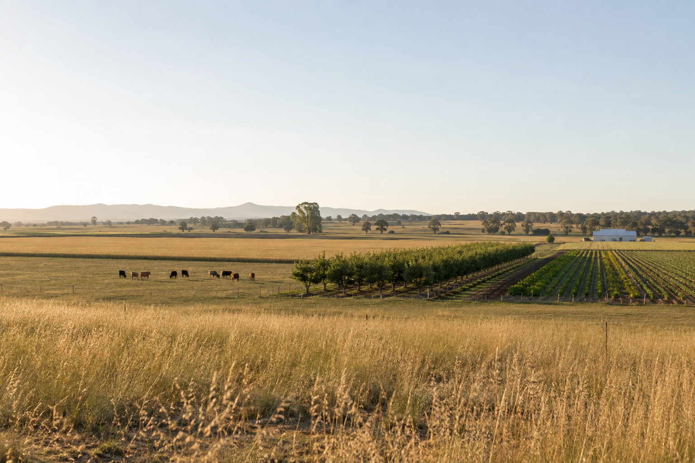

1. Learn
Start with the matching 2026 lesson package and trace important claims to an authorised source.
Year 8 · Agriculture Technology elective
Investigate agricultural production, food security, beef, dairy, horticulture, pork, poultry and the systems that connect producers with consumers.

Stage 4 · Agriculture Technology
Investigate agricultural production, sustainability, consumers and technology through food security, beef, dairy, horticulture, pork and poultry.
How the course works
Every module has three substantial theory sections, student-learning checks and written evidence.
Start with the matching 2026 lesson package and trace important claims to an authorised source.
Use the knowledge checks and feedback to correct misconceptions.
Explain comparisons, systems, choices and trade-offs in your own written evidence.
Use Print / Save PDF and the folio backup to keep evidence outside the webpage.
Student evidence. Written evidence autosaves on this browser and device. Browser storage is a working copy, not cloud submission.
Year 8 elective pattern: 20 weeks, 50 × 60-minute periods, 5 periods per fortnight and an average 2.5 hours per week. This introductory unit contributes to a 100-hour Agriculture Technology elective, so additional study is required. Exact module timing and any practical work remain Teacher to confirm.
Teacher access to the matching class is in Teacher resources. Learning posts are currently saved as drafts.
Classroom access depends on your existing account and enrolment. Opening a link does not enrol you, publish drafts or submit work saved on this website.
How the course works
Every module has three substantial theory sections. Each named section has ten student-learning knowledge checks, followed by written evidence that autosaves on this browser and device.
Start with the matching 2026 lesson package and trace every important claim to an authorised source.
Use feedback to correct misconceptions, then explain comparisons, systems, choices and trade-offs.
Autosave supports work on this device. Use Print / Save PDF and the folio backup to keep evidence outside the webpage.
Course pathway
Define agriculture, connect products to industry sectors and examine how people and technologies shape production.
Open module →Explain why agriculture matters and investigate the availability, access, use and stability of food.
Open module →Compare cattle groups and breeds, then connect characteristics to environment and production goals.
Open module →Compare beef-production and feeding systems, then explain the trade-offs using the supplied lesson evidence.
Open module →Relate dairy breeds, regions, routines and value adding without inventing local farm requirements.
Open module →Sequence milk processing and explain taught nutrition concepts using current, visible sources.
Open module →Investigate horticultural products and explain how climate, water, soil and management affect regions.
Open module →Trace a product supply chain and evaluate the role of technology, work and food choice.
Open module →Interpret product labels and industry evidence, then explain breed selection and crossbreeding.
Open module →Compare production systems and reason about feeding, welfare, efficiency and farmer choices.
Open module →Distinguish broilers and layers, compare production systems and examine evidence-based trade-offs.
Open module →Collect one evidence record for each lesson plus a source-gated course synthesis and plan-status card.
Open folio →Project-plan status
The authorised folder contains lesson packages and supplementary older workbook material, but no current agriculture-plot, poultry-shed or production plan that can control project specifications.
Complete Cards 1–11 and the course-synthesis part of Card 12. Use current teacher-issued directions for any practical or animal-care work.
Agriculture Technology 7–10 Syllabus (2024)
This syllabus is implemented from 2027. Under AGT4-ADJ-01, teachers may adjust the Stage 5 outcomes for students in Years 7 and 8. The opportunities below must still be matched to actual teaching and evidence; they are not automatically a formal assessed set.
Applies production processes and safe work practices in agricultural contexts. Practical application remains dependent on current teacher-authorised work.
Explains factors that influence animal and plant selection, growth and development in agricultural enterprises and systems.
Explains industry practices in agricultural enterprises and systems.
Analyses relationships between agricultural production, sustainability and consumers.
Investigates and assesses the influence of innovation and management practices on agricultural enterprises and systems.
Selects and justifies the use of technologies and processes in agricultural production and systems.
Communicates ideas and concepts in agricultural technology contexts.
Authorised sources
The current 2026 folder controls the 11-module learning order and supplies lesson plans, theory slides and student activities.
Open authorised lesson folder ↗The older Stage 4 workbook and poultry booklet may support reference reading, but they do not create current practical, plan or assessment requirements.
Open authorised Stage 4 folder ↗